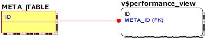

메타테이블 및 성능뷰 개요
알티베이스 내부 모니터링을 위해서는 알티베이스 데이터 딕셔너리인 메타테이블과 성능뷰에 대한 이해가 우선적으로 필요하다. 본 문서에서는 사용자의 이해와 쿼리 편의를 고려하여 메타테이블과 성능뷰의 관계를 ERD(Entity-Relationship Diagram)를 사용하여 표현하였다. 이에 앞서 숙지해야 할 사항에 대해 설명한다.
ERD 표기에 관하여
사용자의 이해와 쿼리 편의를 고려하여 기반 테이블이 존재하지 않는 성능뷰 특성을 무시, 아래와 같이 성능뷰를 테이블로 표현하여 조인 시 참고할 주요 키를 FK 형태로 표현하였다. 이러한 표기로 인한 혼동을 피하기 위해 메타테이블은 배경을 노란색으로 성능뷰는 흰색으로 표시하였다.

또한, 위 ERD에서 메타테이블의 ID 컬럼과 성능뷰의 META_ID 컬럼처럼 동일한 속성의 컬럼이 메타테이블 및 성능뷰에 따라 서로 다른 이름일 수 있는데, 이런 경우는 컬럼에 동일한 색상을 주어 같은 속성임을 나타냈다.
유의사항
알티베이스 메타테이블과 성능뷰는 아래와 같은 특성이 있음을 유의해야 한다.
- 동일한 속성의 컬럼이 메타테이블 및 성능뷰에 따라 서로 다른 이름일 수 있다.
- 알티베이스 서버 버전에 따라 메타테이블 및 성능뷰의 컬럼이름이 변경되거나 삭제될 수 있다.
- 알티베이스 서버 버전에 따라 메타테이블 및 성능뷰가 추가되거나 삭제될 수 있다.
용어
설명에 앞서 혼동이 발생할 수 있는 일부 용어에 대한 정의이다.
- 세션 (session)
알티베이스 서버에 접속한 사용자의 접속 단위를 의미한다. 하나의 사용자는 동시에 여러 개의 세션을 가질 수 있다. - 구문 (statement)
트랜잭션에서 수행되는 SQL 하나하나를 의미하는 용어로 문맥에 따라 'SQL (구)문', 'Query', '질의(문)', '쿼리(문)'는 모두 동일한 의미를 가지는 경우가 많다. 본 문서에서는 '쿼리'로 통일한다. - 메모리DB GC (garbage collector) or GC
사용자가 commit을 수행하면 MVCC(Multi Versioning Concurrency Control, 다중레코드동시제어) 기법에 의해 유지되던 변경전의 레코드는 삭제가 되어야 한다.
알티베이스는 변경전의 레코드 삭제를 위해 별도 스레드를 운영하는데, 이를 각각 메모리 DB GC, 디스크 DB GC라 칭한다. 하지만, 알티베이스 5.3.3부터 디스크 DB의 MVCC 방식이 변경되어 디스크 DB GC가 없어지면서 메모리 DB GC만 존재하기에 줄여서 GC 또는 Ager라 한다.
{kind=link}